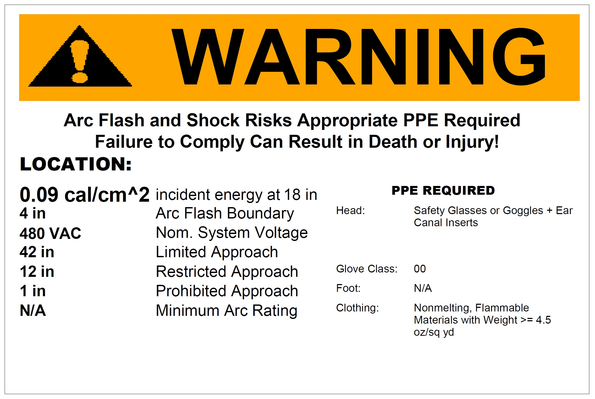

Services
Arc-Flash Study – is crucial for increasing awareness of arc-flash hazards within a facility. By identifying and mitigating arc-flash risks, the study ensures better protection for equipment and significantly boosts personnel safety. Additionally, performing an arc-Flash Study ensures compliance with key regulatory requirements, including NEC Article 110.16, NFPA 70E, and OSHA standards.
Short-Circuit Study – is essential for identifying underrated equipment before extensive system damage occurs.
Coordination Study – is used to enhance equipment protection and ensuring that protective devices trip in the correct sequence. This coordination increases facility reliability by confining the impact of disturbances, such as faults or overloads, to smaller areas of the distribution system.
Arc Flash Safety Training (NFPA 70E) – onsite course provides a comprehensive overview of the hazards associated with working on or near electrical conductors and equipment. The course places special emphasis on arc flash hazards and outlines the regulatory requirements for protecting employees from these dangers.
Power Factor Correction – can help reduce your electric bill by identifying the optimal location and size of power factor correction capacitors.

Software
Phase engineering has experience in using both SKM and Easypower. A model of the customers’ electrical system is made using either SKM or Easypower which then is used to generate short-circuit, coordination, and arc-flash reports. We have found Easypower to be more stable than SKM but their reports require more formatting. SKM has been around for longer, so they are an industry standard, but here at phase engineering we can use both tools. The model of the electrical system made in SKM or Easypower is easily transferable to the customer for future use.
About Us
Our team consists of two professional electrical engineers who bring a collective experience of 12 years, specializing in arc-flash studies. Our portfolio includes numerous successful projects in industrial plants, data centers, and government buildings. We handle every aspect of the project, from on-site data collection to report generation and equipment labeling.